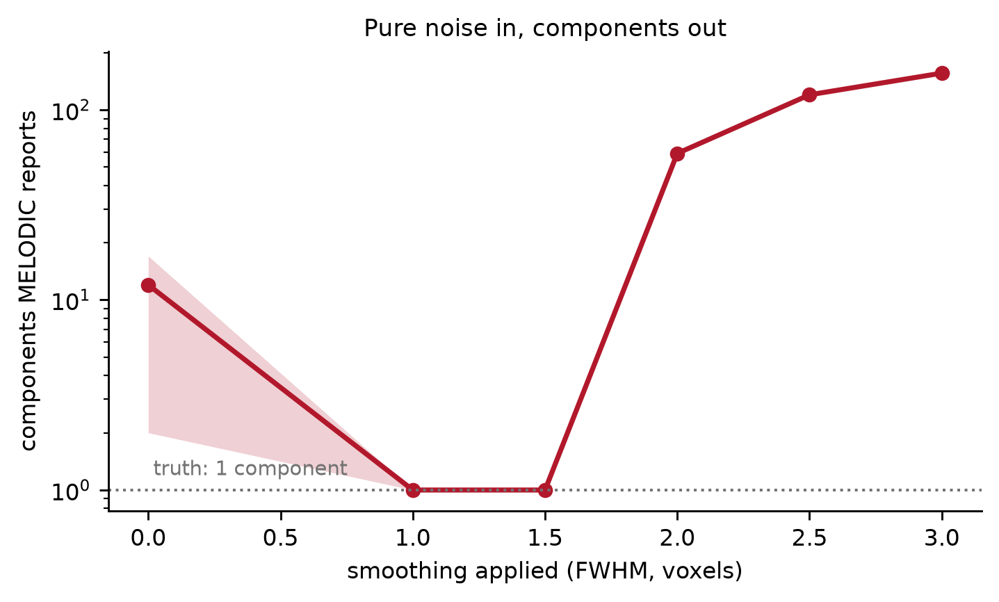
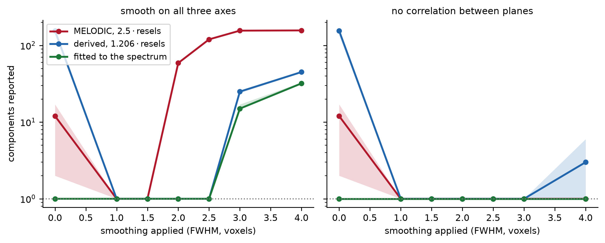

Spatial smoothness in the noise causes MELODIC to overestimate the number of components. This overestimation happens because smoothness removes independent samples, and every model-order criterion that takes the voxel count at face value (like the default one) will read that as structure. MELODIC is unusual in that it has a built-in method of mitigating effects of spatial smoothness, and the correction works when a hard-coded constant it uses matches the data. But it’s not clear to me what kind of data it was designed to match.
Smoothing Results In a Higher Estimated Dimensionality
FSL’s MELODIC is described by a nice technical report, and the code is available for inspection on GitLab. However, while comparing the two I’ve been surprised by several details. This post is on details regarding the handling of data smoothness, in particular during the automatic dimensionality estimation.
To investigate MELODIC’s behavior, this post relies on several experiments with simulated data. All simulations involved generating Gaussian noise on a 48×48×30 grid with 400 volumes. The noise was independent in space and independent in time, so there were no “signal” components. It was spatially smoothed with Gaussian kernels at various widths, and at each width I ran MELODIC’s model-order selection (the default lap criterion) with resels computed the way MELODIC computes it.
Show code
# The sweep runs to four voxels FWHM, but that width breaks by a different# mechanism than the rest of the curve, so it is held back to the caveats.shown = FWHM[:-1]fig, ax = plt.subplots(figsize=(5.6, 3.4))cis = [mc.boot_ci(arm(ISO, fw, "melodic")) for fw in shown]ax.plot(shown, [c[0] for c in cis], "o-", color=SPEC, lw=2, ms=5)ax.fill_between( shown, [c[1] for c in cis], [c[2] for c in cis], color=SPEC, alpha=0.2, lw=0)ax.axhline(1, ls=":", color=GRAY, lw=1.1)ax.annotate("truth: 1 component", (0.0, 1), fontsize=8, color=GRAY, va="bottom", xytext=(2, 4), textcoords="offset points",)ax.set_yscale("log")ax.set_xlabel("smoothing applied (FWHM, voxels)")ax.set_ylabel("components MELODIC reports")ax.set_title("Pure noise in, components out", fontsize=9.5)plt.tight_layout()plt.show()

Figure 1: Estimated model order on pure noise, against how much the noise was smoothed first. Medians over five volumes, bootstrap 95% intervals. Nothing is planted, so the truth is one component everywhere and every component above the dotted line was manufactured.
At one voxel of smoothing the estimate is 1. At two voxels it is 59, and at three it is 156. So, with more smoothing, MELODIC finds more components.1
The one point that does not fit the pattern is the leftmost one; with no smoothing at all the estimate is 12. That turns out to be the same mechanism running in the opposite direction, but we’ll return to this later, once we’ve pinned down the mechanism.
First, let me ward off a misinterpretation. A natural reading of Figure 1 is that because smoothing creates spatially coherent structure, we should expect or want MELODIC to find that structure. Indeed, smoothing does create spatial structure within each volume (Figure 2).
Figure 2: Three consecutive volumes of the same pure-noise dataset, smoothed to 3 voxels FWHM, shown at the same axial slice. Voxels within 0.1 of zero – about one standard deviation of the smoothed data – are left blank, so what survives is roughly the blobbiest third of each map. Nothing is planted in any of them, and consecutive maps correlate at about 0.04. The structure is real to look at and is not shared across time.
Smoothed maps have clusters, edges and a plausible amount of structure, but the clusters differ from volume to volume. The dimensionality estimated by MELODIC is not a claim about how blobby the maps are. It is a claim about temporal rank, about how many distinct timecourses the data needs. Spatial smoothing cannot add temporally structured blobs, because it never mixes timepoints.
What smoothing does do is destroy independent samples. Much of spatial ICA (like the standard MELODIC application) is built around the temporal covariance matrix.2 The temporal covariance matrix looks at the spatial similarity between pairs of timepoints. As with any covariance matrix, we’ll get a better estimate if we have more samples. In this case, voxels are the samples, and “more samples” could translate to something like a finer voxel resolution. Conversely, we’d have fewer samples if we had either a coarser grid, or if each element of the grid were muddled with the neighbors, as happens when smoothing spatially. So, it is appropriate to say that spatial smoothing decreases our “effective” sample size, and with a lower (effective) sample size, we can expect to have a noisier estimate of the covariance matrix. 3
If the problem is that the voxel count overstates the sample size, then any model-order criterion that takes the voxel count at face value should break the same way. Let’s check against scikit-learn4, which has no built in correction for spatial smoothness.
Show code
pd.DataFrame( [ {"FWHM (voxels)": fw,"sklearn, no correction": ISO[fw]["mle"][0],"MELODIC, corrected": order(ISO, fw), }for fw in FWHM ]).set_index("FWHM (voxels)")
Table 1: Model order under two methods. sklearn’s PCA(n_components='mle') is Minka’s Laplace approximation scored at the full voxel count, with no smoothness correction of any kind. MELODIC applies one. The truth is 1 in every cell.
sklearn, no correction
MELODIC, corrected
FWHM (voxels)
0.0
1
12
1.0
1
1
1.5
340
1
2.0
382
59
2.5
389
120
3.0
398
156
4.0
398
157
The scikit-learn implementation returns essentially the full rank from 1.5 voxels FWHM upward. MELODIC does not break until 2 voxels. So, MELODIC has a correction that helps. Let’s dive into it.
MELODIC’s Correction for Spatial Smoothness
MELODIC picks the model order by maximizing a Laplace approximation to the model evidence for probabilistic PCA. Before it does that, however, it adjusts the eigenspectrum “in order to account for the limited amount of data” (pg. 9). The adjustment divides the observed spectrum by the one white noise would have produced, modeled with the Marchenko–Pastur limit, which a sample covariance matrix converges to when the data really are white and \(p\) and \(n\) both grow with their ratio held fixed. That limit depends on one number, the ratio of timepoints to samples: \(\nu = p/n\).56
The chain is four functions. adj_eigspec builds the reference and divides the observed spectrum by it. Feta supplies that reference (not the Marchenko–Pastur density but its inverse, integrated and read off as one expected eigenvalue per rank, the \(G^{-1}\) of the report). ppca_est scores each candidate rank, and ppca_select walks up the resulting curve until it stops rising, which is point taken to be the dimensionality.
Importantly, adj_eigspec does not use the voxel count for \(n\), but instead \(n_\text{eff}\):
resels is a measure of the data’s spatial smoothness, computed in-process by est_resels. It standardizes each voxel’s timecourse, measures the lag-one spatial autocorrelation \(\rho\) along each axis, converts it to the width of the Gaussian kernel that would produce it, and multiplies the three axes together. It is the resel volume of random field theory, in voxel units.7
So MELODIC is doing exactly the right thing in principle: it measures how smooth the data is and discounts the sample size accordingly. For the discount, write
\[
r \;=\; \frac{N}{n_{\text{eff}}} \;=\; 2.5\cdot\mathrm{resels}
\]
But what’s with the \(2.5\)? I haven’t been able to find any mention of it (or resels, even) in the technical report, the docs, or the FSL mailing list8. Let’s see how this leads to influencing the estimated number of components.
The tilt
The correction only works if the smoothness adjustment (use of \(n_\text{eff}\)) agrees with the sample size the eigenspectrum was actually estimated at. Three lines in melhlprfns.cc do the work:
AdjEV enters L461 carrying the spread of the data and leaves carrying the ratio of two different spreads.
The observed eigenvalues were computed over \(N\) columns, but those columns are spatially correlated. So their spread is not the spread of \(N\) independent ones, but rather the spread of however many independent columns the spatial field is really worth. Call that \(n\). In contrast, the reference they are divided by is built at \(p/n_\text{eff}\). So two aspect ratios meet on L461, \(p/n\) from the data and \(p/n_\text{eff}\) from resels. When \(n_\text{eff} = n\), AdjEV is flat and the criterion sees noise. When \(n\) and \(n_\text{eff}\) are not equal, the quotient is tilted, and, because a tilted spectrum is exactly what real structure looks like, the criterion estimates a higher dimensionality.9
Figure 3: What ppca_est is handed. Simulations were done on white noise with independent voxels, so the correct discount is exactly r = 1. Each curve is the observed eigenspectrum divided by the noise reference, normalized to unit mean. At the correct discount (no discount) it is flat. At MELODIC’s default it slopes, and the criterion will interpret the slope as signal.
Which criteria care, and in which direction
The tilt story makes a prediction: the failure should depend on \(r\) (the mismatch between the two sample sizes) and not on smoothing as such. So take noise with genuinely independent voxels, where the correct discount is exactly \(r = 1\), and vary \(r\) by hand. Then, compare the Laplace criterion to another that is built into MELODIC (BIC).
Show code
R_GRID = [0.05, 0.1, 0.2, 0.4, 0.6, 1.0, 1.5, 2.0, 2.5, 3.0, 4.0]P_GRID = [200, 400, 800]NW, NSEED =8000, 8rsweep = {}for p_ in P_GRID:for s inrange(NSEED): evs = evals_of(np.random.default_rng(6000+ s).normal(size=(p_, NW)))for r_ in R_GRID: est = mc.order_from_evals(evs, NW, discount=r_)[1]["estimators"] rsweep.setdefault((p_, r_), []).append((est[0], est[1]))pd.DataFrame( [ {"r": r_,**{f"{p_} vols": "{}/{}".format(int(np.median([v[0] for v in rsweep[(p_, r_)]])),int(np.median([v[1] for v in rsweep[(p_, r_)]])), )for p_ in P_GRID }, }for r_ in R_GRID ]).set_index("r")
Table 2: Model order on unsmoothed white noise with independent voxels, so the correct discount is r = 1 and nothing else is varying. Medians over eight repetitions; every cell should be 1. lap is MELODIC’s default criterion; bic is another of its --dimest options.
200 vols
400 vols
800 vols
r
0.05
125/45
290/94
640/194
0.10
55/1
184/1
510/1
0.20
1/1
42/1
287/1
0.40
1/1
1/1
6/1
0.60
1/1
1/1
1/1
1.00
1/1
1/1
1/1
1.50
1/1
1/1
1/1
2.00
1/1
1/1
105/1
2.50
1/1
22/1
213/1
3.00
1/1
58/1
288/1
4.00
13/1
110/1
378/1
Each cell is lap/bic. Three things fall out.
lap is correct in a window around \(r = 1\) and inflates on both sides of it. Over-discounting manufactures components, which is the case that matters for smoothed data, but under-discounting does too.
The window narrows as the acquisition gets longer. At 200 volumes the criterion survives the discount being wrong by a factor of five below and three above. At 400 volumes that is 2.5 and 2, and at 800 volumes it is 1.7 and 1.5. More data makes the estimator less robust to a mis-specified sample size, not more. The window is also lopsided at every length, with a little more room on the under-discounting side.
In contrast, bic is pinned at 1 everywhere except the top row, where the discount is off by twentyfold. Whatever this is, it is close to specific to the Laplace criterion, which is the one MELODIC uses by default.
MELODIC is usually step one of FIX, and I have not tested what any of this does downstream. One hope is that it does not matter: if MELODIC over-decomposes, the extra components are noise, FIX classifies them as noise, and they get regressed out along with everything else. Unfortunately, I can think of a few reasons there might be problems:
Splitting. Over-decomposition splits real signal across several components10. The pieces carry less variance and weaker canonical signatures than the whole would, which makes each of them likelier to be labeled noise and then real signal is what gets regressed out.
Degrees of freedom. FIX removes the noise components by regression. Taking out \(K\) regressors from \(p\) timepoints confines the residual to a \((p-K)\)-dimensional subspace. At 400 volumes and 150 components that is nearly 40% of the temporal degrees of freedom, spent on components that describe nothing. Anything downstream that assumes \(p\) degrees of freedom is then anticonservative.
Classifier calibration. FIX’s classifier is trained on hand-labeled components at whatever decomposition granularity the training data had. A model order that moves systematically with smoothness moves the feature distributions with it.
Appendix: Attempts at Getting 2.5 From Resels
So the 2.5 constant matters. I haven’t found any
Smoothing spreads each voxel over its neighbors, so a block of voxels inside one blob is no longer a block of independent observations. The natural question is how big that block is. Answer that, and the effective sample size is just the number of voxels divided by it.
There is already a unit for the size of a blob, and MELODIC is already computing it. The box whose sides are the FWHM along each axis is a resel. So one guess is that one resel buys one independent sample, and the discount should be about \(1\cdot\mathrm{resels}\). That guess is close but slightly too small, because the FWHM is the width at half height and the correlation does not stop there. Voxels a little beyond the half-maximum point are still partly redundant with the center, meaning that the volume over which they are effectively the same observation is a bit larger than the resel box. Exactly how much larger is derivable,11 and for a Gaussian smoothed in three dimensions it is about 20%:
\[
r \;\approx\; 1.206 \cdot \mathrm{resels} .
\]
Nothing in that is tunable. It is a fact about the shape of a Gaussian in three dimensions, and it is what any correction of this kind ought to converge to.
This can be checked against the data. If the argument is right, then fitting a Marchenko–Pastur bulk to an observed eigenspectrum should recover \(1.206\cdot\mathrm{resels}\).
Table 3: What the discount should be, measured. r measured is fitted by matching Feta’s spread to the observed eigenspectrum; it is the quantity 2.5 · resels is trying to approximate. Medians over five volumes.
resels
r measured
1.206 · resels (derived)
2.5 · resels (as implemented)
FWHM (voxels)
0.0
0.061
1.08
0.07
0.15
1.0
0.541
1.18
0.65
1.35
1.5
2.846
3.54
3.43
7.12
2.0
7.859
9.31
9.48
19.65
2.5
15.549
17.99
18.75
38.87
3.0
26.864
30.74
32.40
67.16
4.0
63.491
71.38
76.58
158.73
The derivation holds up from about 1.5 voxels FWHM upward, 9.3 measured against 9.5 predicted at two voxels. The implemented constant does not. It is about twice too large across the whole smoothed range: 19.6 against a true 9.3 at two voxels, and 67 against 31 at three. By the previous section, that is the direction that manufactures components.
Below one voxel it fails the other way, albeit strangely: on unsmoothed noise est_resels returns 0.061, so \(r =\) 0.15, which is a “discount” below one that makes \(n_\text{eff}\) larger than the number of voxels. That is the under-discounting arm of Table 2, and it is why the leftmost point of Figure 1 is wonky (12 rather than 1).
An Idea about 2.5
One possibility is that the 2.5 is an attempt to compensate for a bias in how MELODIC estimates resels, with the function est_resels. The function cannot report zero. It reads a lag-one correlation along each axis and converts it to a width, and when an axis carries no correlation at all, it returns a floor of about 0.40 voxels (why, and why that number). The bias is confined to axes that carry little or no real correlation.
Consider what an axis with no correlation ought to contribute. Redundancy is a sum of \(\rho(h)^2\) over displacements (\(\rho:\) autocorrelation; \(h\): displacement), and along such an axis every term vanishes except \(h = 0\). This is self-correlation, so the axis contributes exactly 1, dropping out of the product for resels. However, est_resels puts 0.40 there instead, so resels comes out \(1/0.4\) times too small, and multiplying by \(2.5\) would cancel that out (but see for why 2.5 is not quite right here).
If that story is right (2.5 is an attempt to compensate for bias how est_resels handles one axis with no autocorrelation), then the inflation should vanish whenever the discount matches what the data needs, and it should never appear in the geometry where \(2.5\) happens to be close.
Show code
fig, axes = plt.subplots(1, 2, figsize=(8.6, 3.5), sharey=True)panels = [(ISO, "smooth on all three axes"), (IP, "no correlation between planes")]for a, (res, title) inzip(axes, panels):for how, col, lab in ( ("melodic", SPEC, r"MELODIC, $2.5\cdot$resels"), ("derived", CODE, r"derived, $1.206\cdot$resels"), ("matched", GREEN, "fitted to the spectrum"), ): cis = [mc.boot_ci(arm(res, fw, how)) for fw in FWHM] a.plot(FWHM, [c[0] for c in cis], "o-", color=col, lw=1.9, ms=4.5, label=lab) a.fill_between( FWHM, [c[1] for c in cis], [c[2] for c in cis], color=col, alpha=0.18, lw=0 ) a.axhline(1, ls=":", color=GRAY, lw=1.1) a.set_yscale("log") a.set_xlabel("smoothing applied (FWHM, voxels)") a.set_title(title, fontsize=9.5)axes[0].set_ylabel("components reported")axes[0].legend(fontsize=8.5, loc="upper left")plt.tight_layout()plt.show()

Figure 4: Model order on pure noise under two field geometries, at three choices of discount. Left: all three axes genuinely smooth, where MELODIC’s 2.5 · resels overshoots by about twofold and the count climbs. Right: no correlation between planes, where the estimator’s floor makes 2.5 about right and inflation is minimal. The line fitted to the spectrum is an oracle, included to show what the best possible discount could do (seems slightly better than the derived constant). Medians over five volumes.
Figure 4 is consistent with the story. When all three axes are smooth, both corrected discounts hold the estimate at 1 component from one voxel FWHM through 2.5, where MELODIC’s constant gives 120. The exception is the left edge, where the derived constant is the worst of the three: at zero smoothing it reports 155 components, because \(1.206\cdot\mathrm{resels}\) is only as good as resels, and on data with no smoothness at all resels is nothing but the floor. And it’s nice to see the derived constant working over a wider range, though it too eventually leaves the truth, and for a reason this post does not settle: the oracle arm, which cannot have the wrong constant, degrades alongside it. When there is nothing to find along \(z\), MELODIC’s constant works quite well.
However, the right panel is a strong assumption. The condition is that \(z\) carries a lag-one correlation below about \(0.001\). Anything above that and est_resels starts reporting a real width instead of its floor, the shortfall it was compensating for closes, and the constant the data needs falls back toward 1.21. At a through-plane correlation of \(0.1\) the requirement is already down to about \(1.5\); at \(0.2\), about \(1.3\).
Real data is not close to that threshold. Kriegeskorte, Bodurka and Bandettini (2008), reports adjacent-voxel correlations of 0.4 to 0.6 within a slice and “around 0.2” between slices, for both a resting human and a water phantom. That was 3.125 mm in plane, 4 mm slices, and a 2 mm gap—hostile to through-plane correlation, and still two orders of magnitude above the threshold. Contiguous isotropic voxels would give more. So the left panel may be closer to real data, and there \(2.5\cdot\mathrm{resels}\) over-discounts by something close to twofold.
Appendix: where the 1.206 comes from
The claim in the main text was that a blob is worth one independent sample, and that its volume is about 20% more than a resel. This is that, in full.
There are two ingredients. The first is how many independent columns a correlated set of columns is worth. For \(N\) columns with spatial correlation matrix \(C\), that count is12
which is the number of independent columns whose covariance would be as noisy as the one you actually have. The diagonal of \(C\) is all ones, so \(\mathrm{tr}\,C = N\). And if the field is stationary, the entry linking voxels \(i\) and \(j\) depends only on the displacement between them, so every row of \(C\) contains the same set of values and
So \(\sum_h \rho(h)^2\) is the “size of a blob” the main text was after: the number of voxels each independent observation costs.
That sum runs over displacements \(h\) from one voxel to another, and a displacement in a \(d\)-dimensional grid is a \(d\)-vector, \(h = (h_1, \dots, h_d)\). Everything below is bookkeeping on that sum. Voxels sit one unit apart, so each term covers a grid cell of volume one, and provided \(\rho\) changes slowly from one voxel to the next:13
The second ingredient is \(\rho\) itself. Convolving white noise with a kernel gives a field whose autocovariance is the kernel’s own autocorrelation, and a Gaussian of width \(\sigma\) correlated with itself is a Gaussian of width \(\sigma\sqrt{2}\) — which is where the \(4\sigma^2\) below comes from rather than \(2\sigma^2\). Scaled so that \(\rho(0) = 1\), and with the same \(\sigma\) applied along every axis,
Squaring it replaces \(4\sigma^2\) with \(2\sigma^2\) and leaves the product structure alone, so the \(d\)-dimensional integral separates into \(d\) copies of the one-dimensional Gaussian integral \(\int_{-\infty}^{\infty} e^{-x^2/2s^2}\,\mathrm{d}x = \sqrt{2\pi s^2}\):
So the \(d/2\) is one factor of \(\sqrt{2\pi\sigma^2}\) per smoothed axis, and nothing more.
What remains is to put that in the units est_resels reports. A Gaussian’s full width at half maximum is \(f = \sqrt{8 \ln 2}\,\sigma\), so \(\sigma^2 = f^2/(8\ln 2)\) and
Finally \(f^{\,d}\) is the product of the per-axis FWHM over the \(d\) smoothed axes, and a product of per-axis FWHM is exactly what resels is. The two coincide when the data really are smoothed along all three axes, so that \(d = 3\) and MELODIC’s three-way product is measuring the same three axes the field is smooth along. Then \(\left(\pi/(4\ln 2)\right)^{3/2} = 1.206\) and
which is the 20% the main text quoted. In two dimensions the same expression gives \(\left(\pi/(4\ln 2)\right) f^2 = 1.133 f^2\), which is what the next appendix needs.
Appendix: why est_resels is biased
est_resels reports a width for every axis, including axes that have nothing on them. This is where that floor comes from, why it sits near 0.40, and why it is not quite a constant. What the floor then does to the discount is the next appendix.
Why there is a floor at all. Along an axis with no correlation, the true \(\rho\) is zero, so \(\hat\rho\) is pure sampling noise. It is an average of \(n\) products of standardized values, one per adjacent pair per timepoint, so its standard deviation is \(1/\sqrt{n}\). est_resels then takes the absolute value, and the mean of a folded normal is \(\mathbb{E}\lvert\hat\rho\rvert = \sqrt{2/\pi n}\). Pushing that through the width conversion \(f = \sqrt{2\ln 2/(-\ln\rho)}\) gives
\[
f_\text{floor} \;=\; \sqrt{\frac{4\ln 2}{\ln(\pi n / 2)}} ,
\]
which for the 38,400 voxels and 400 volumes here is 0.404, against 0.417 measured. Note where \(n\) sits: inside a logarithm, under a square root. The floor shrinks as \(1/\sqrt{\log n}\), so no amount of data removes it — a hundredfold more data moves it by less than a twentieth of a voxel.
That also means \(0.4\) is a stable target but not an exact one. Across dataset sizes a person might plausibly have had in front of them, the floor runs from about 0.37 to 0.43, so \(1/\text{floor}\) runs from about 2.3 to 2.7:
\(2.5\) is comfortably inside that range, which is the sense in which “round the floor to \(0.4\) and invert” is a defensible thing to have done. It is not a constant of nature, though, and a much longer or much larger acquisition wants a different one.
voxels \(\times\) volumes
floor
\(1/\text{floor}\)
30,000 \(\times\) 100
0.425
2.35
30,000 \(\times\) 200
0.416
2.41
38,400 \(\times\) 400
0.404
2.48
100,000 \(\times\) 500
0.391
2.56
Why the bias is confined to nearly-empty axes. The width conversion is violently compressive near zero, which cuts both ways. It is what keeps a wildly wrong \(\hat\rho\) from producing a wildly wrong width — returning \(f = 0.1\) would take \(\rho \approx 10^{-61}\) — and it is what stops the width from ever reaching zero. Above about a voxel and a quarter the compression no longer matters and est_resels is essentially unbiased; below it, the reported width is mostly an artifact of the floor. resels is a fair summary of redundancy for any axis with real correlation on it, and not a summary of anything for an axis without.
Appendix: A Refinement of 2.5 When an Axis Has 0 Correlation
If 2.5 were chosen to account for bias in est_resels under 0 correlation, note that it’s not quite the right one. Dividing out the floor recovers the resel area \(f_x f_y\), but the redundancy of a two-dimensional Gaussian field is \(1.133\,f_x f_y\), because a blob of FWHM \(f\) is worth \(1.0645 f\) independent-sample-widths rather than \(f\). That \(1.0645\) is the same per-axis factor whose cube gave the \(1.206\) above. So the two candidate constants nest:
\[
2.5 \;\approx\; \underbrace{\tfrac{1}{0.4}}_{\text{undo the floor}} ,
\qquad
2.83 \;\approx\; \underbrace{\tfrac{1}{0.4}}_{\text{undo the floor}} \times
\underbrace{1.0645^2}_{\text{FWHM}\,\to\,\text{redundancy length}} .
\]
MELODIC’s value is the first. Whoever wrote it fixed the floor and left the second factor on the table, which costs about 12% — far too little for the criterion to notice. Written in terms of what the estimator reports rather than the nominal \(0.4\), the fully corrected constant is \(1.133/f_z\), which at the floor measured here is about 2.7. The \(f^2\) cancels out of it, so nothing about the kernel survives: what ought to be a property of the field is just the reciprocal of a number the estimator made up.
The simulation below builds that field: smoothing \(x\) and \(y\) and leaving \(z\) untouched.
Show code
pd.DataFrame( [ {"FWHM in plane (voxels)": fw,"FWHM z (measured)": f"{med(IP[fw]['fz']):.2f}","resels": f"{med(IP[fw]['resels']):.3f}","r measured": f"{med(IP[fw]['r_fit']):.2f}","r measured / resels": f"{med(IP[fw]['r_fit']) / med(IP[fw]['resels']):.2f}","2.5 · resels": f"{2.5* med(IP[fw]['resels']):.2f}", }for fw in FWHM[2:] ]).set_index("FWHM in plane (voxels)")
Table 4: A field with real in-plane smoothness and no correlation between planes, built by smoothing x and y only. FWHM z is what est_resels reports for the axis that has nothing to report. r measured / resels is the constant MELODIC would need here. Medians over five volumes.
FWHM z (measured)
resels
r measured
r measured / resels
2.5 · resels
FWHM in plane (voxels)
1.5
0.38
0.768
2.38
3.10
1.92
2.0
0.39
1.533
4.52
2.95
3.83
2.5
0.42
2.600
7.00
2.69
6.50
3.0
0.43
3.885
9.96
2.56
9.71
4.0
0.44
7.054
17.30
2.45
17.64
The FWHM z column is the estimator talking to itself; nothing was smoothed along \(z\), so the honest answer is zero, and what comes back is the floor. The constant such a field needs is correspondingly large, running from 3.10 to 2.45, against 1.14 when all three axes are genuinely smooth. And it is not really constant — it drifts, because the invented \(z\) width itself creeps upward, from 0.38 to 0.44. Neither number is a fact about the field; both are facts about the estimator.
Note that the measured column sits above \(2.5\) almost everywhere, which is the missing \(1.0645^2\) showing up as expected. \(2.5\cdot\mathrm{resels}\) is systematically a little under what even this field wants.
Why the floor creeps. The drift in that column is the floor itself moving. The \(n\) in the floor formula of the previous appendix is not the number of products but the number of independent ones, and in-plane smoothing correlates neighboring products with each other — for two in-plane positions a displacement \(\Delta\) apart, the products covary as \(\rho_\text{inplane}(\Delta)^2\) — so the count of independent terms falls by roughly the in-plane redundancy \(1.133f^2\), the same quantity as above doing different work. Fewer independent terms means a larger typical \(|\hat\rho|\), and so a larger \(f_z\).
The effect is muted because \(f = \sqrt{2 \ln 2 / (-\ln \rho)}\) is so compressive: an eighteenfold drop in independent terms moves \(f_z\) only from about 0.40 to 0.44. But \(1.133/f_z\) inherits it, predicting 2.96 at 1.5 voxels and 2.56 at four, against 3.10 and 2.45 measured. So most of the drift is the untouched axis being measured badly, in a way that gets worse the more the other two axes are smoothed. –>
Footnotes
Experiments here are done with a port of the MELODIC code. I ran the same volumes through the actual fsl-melodic binary (version 2601.2, -d 0 --nobet --no_mm), and it reports 11, 1, 1, 58, 120 and 166 components at 0, 1, 1.5, 2, 2.5 and 3 voxels FWHM. The small differences come from est_resels, not from the criterion. FSL’s newimage reorients volumes on read, so the binary and a naive port drop different boundary planes when computing the lag-one autocorrelation, which moves resels by a fraction of a percent. Enough to shift the model order by a few when the estimate is already in the hundreds.↩︎
I find it very easy to accidentally swap dimensions when talking about ICA. So, apologies that this goes a bit slow.↩︎
This sort of thing is the beans and rice of spatial statistics. I am not an expert in that stuff, so I’ll leave you, dear reader, to search elsewhere for derivations.↩︎
The lap method of MELODIC and the mle method of scikit-learn both use the same procedure, from 2000. Interestingly, that method was updated and corrected in 2008. At the time of writing there is an open pull request in the scikit-learn repo to adopt Minka’s own MATLAB implementation. It’s filed for performance rather than for the corrections, but it would bring them along. Based on a few small simulations, I think the corrections have a pretty minimal impact on dimensionality estimation.↩︎
It’s \(\nu\) in the code, but \(\gamma\) in the technical report, which uses \(\nu\) on the eigenvalue itself.↩︎
The report’s equation 9 also carries a condition the code does not check: it holds only for \(\gamma \le 1\), “when the number of samples is equal or larger than the dimensionality of the problem at hand.” This turns out to matter a bit, which I return to later.↩︎
In the adjustment, there’s an interesting dropping of eigenvalues that I also haven’t found any explanation for: Columns(3, Ncols()) on an ascending spectrum, so the two smallest go, and everything downstream runs at \(p - 2\).↩︎
I find the direction of the tilt counterintuitive. Over-discounting (\(n_\text{eff}\) too small) builds a reference that is wider (that is, more sloped) than the data, so the quotient is smallest at rank 1 and largest at the bottom of the spectrum. The next line, SortDescending, then turns it over. This is presumably because the function ppca_est needs a descending spectrum: its \(\lvert A_z \rvert\) term is a product over \(i < j\) of factors in \((\lambda_i - \lambda_j)\), and any factor that comes out non-positive is set to one, so it drops out of the product rather than changing its value.↩︎
The model order and component estimation steps are not iterative but sequential, so a bad estimate of the number of components can affect the component estimation.↩︎
Worked through in the appendix. The short version is that the redundancy volume is \(\int\rho^2\) over displacements, which for a Gaussian works out to \((\pi/4\ln 2)^{d/2}\) times the product of the per-axis FWHM, or \(1.206\cdot\mathrm{resels}\) in three dimensions and \(1.133 f^2\) in two.↩︎
This turns out to be a real condition and not a formality. A kernel narrower than the grid it is sampled on has most of its mass in one voxel, the sum and the integral part company. It is one of the reasons not to trust any of this below about a voxel and a half of smoothing.↩︎